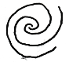
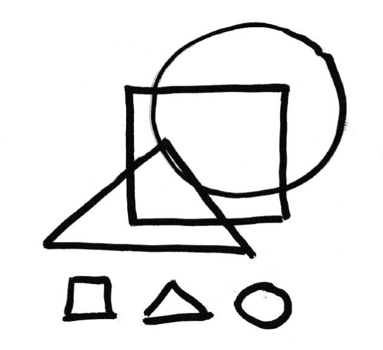
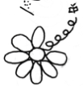

Kit
Working Document
- Try to visualize structure
Kit Intro Outline:
In life, everyone encounters their own unique set of challenges. It is as if each person is given their own plot of land at birth, where they go through life nurturing their land and working through individual challenges to overcome. For some individuals, their challenges can range from pesky weeds or crop pests, which poses an impactful problem that requires a solution.
Some individuals were given pieces of land that face an entirely different array of difficulties. Instead of their difficulties being associated with what’s on the land, their challenge may be navigating the land itself. Their plot of land may be prone to events that are extreme and unpredictable, much like earthquakes. The challenges faced by people with BD are one example of this.
People with BD face significant risks of engaging in unpredictable, time-limited, yet devastating behaviours such as substance abuse, hypersexuality, relationship breakdown, self-harm, and financial recklessness, but there are gaps in the types of support provided to individuals with a diagnosis of BD, which focuses primarily on regulating mood. These gaps in support have left other challenges experienced by them, including risk-taking and decision-making, largely unresolved. To address this issue, we are creating a personalised recovery and resilience kit. The development of the kit is informed by findings in past and current studies, and co-design methodology.
Why This Matters
An individual’s experience with Bipolar Disorder can bring on challenges, such as feelings of uncertainty, loss of control, hopelessness, and intense fluctuations of mood. For those with BD, balancing responsibilities and making decisions can feel like an impossible task. It can feel hard to connect with others and manage both physical and mental health. This kit is designed to give individuals with BD an organized and cohesive list of support and methods to balance the hardships of life in order to overcome the areas that feel out of control.
The Earthquake Metaphor
Navigating life as a person with bipolar disorder can feel like living on earthquake-prone land. There can be unexpected disruptions to routine, relationships, and well-being that can feel like a complete disturbance to one’s individual foundation. However, just as earthquake-resistant structures are built with resilience in mind, individuals can develop strategies to cope with and overcome these challenges.
Inspired by the Japanese pagoda, a structure designed to withstand seismic forces, resilience in individuals with bipolar disorder can be supported by a layered system. A strong sense of self-awareness, values, and purpose provides emotional stability during and in-between mood fluctuation episodes. A strong network of friends, family, support services, and mental health resources acts as protective layers, allowing for support during particularly stressful periods. Developing coping mechanisms, such as mindfulness, self-understanding, and seeking support allows individuals with BD to handle stress and mood fluctuations without feeling overwhelmed. Establishing consistent sleep patterns, balanced nutrition, and regular physical activity provides a solid foundation for mental well-being.
Why This Matters
An individual’s experience with Bipolar Disorder can bring on challenges, such as feelings of uncertainty, loss of control, hopelessness, and intense fluctuations of mood. For those with BD, balancing responsibilities and making decisions can feel like an impossible task. It can feel hard to connect with others and manage both physical and mental health. This kit is designed to give individuals with BD an organized and cohesive list of support and methods to balance the hardships of life in order to overcome the areas that feel out of control.
The Earthquake Metaphor
Navigating life as a person with bipolar disorder can feel like living on earthquake-prone land. There can be unexpected disruptions to routine, relationships, and well-being that can feel like a complete disturbance to one’s individual foundation. However, just as earthquake-resistant structures are built with resilience in mind, individuals can develop strategies to cope with and overcome these challenges.
Inspired by the Japanese pagoda, a structure designed to withstand seismic forces, resilience in individuals with bipolar disorder can be supported by a layered system. A strong sense of self-awareness, values, and purpose provides emotional stability during and in-between mood fluctuation episodes. A strong network of friends, family, support services, and mental health resources acts as protective layers, allowing for support during particularly stressful periods. Developing coping mechanisms, such as mindfulness, self-understanding, and seeking support allows individuals with BD to handle stress and mood fluctuations without feeling overwhelmed. Establishing consistent sleep patterns, balanced nutrition, and regular physical activity provides a solid foundation for mental well-being.
Crafting Resilience
Resilience is not built overnight—it requires continuous shaping, adaptation, and learning. The symptoms of bipolar disorder can feel overwhelming and out of control, and individuals with BD must learn to navigate their reality by adopting sustainable habits. The Japanese concept of Kaizen, meaning continuous improvement, teaches that small, steady refinements in daily routines, social habits, and coping strategies lead to long-term resilience. Rather than expecting perfection, the philosophy of Wabi-sabi, which embraces imperfection, reminds individuals to see setbacks as natural and valuable parts of learning. Resilience is about recognizing that challenges happen and can be overcame. Moments of struggle do not define the journey but shape it.
 The Master-Apprentice Relationship
Learning from mentors, peers, and loved ones is crucial in developing resilience. Just as in traditional craftsmanship, where an apprentice learns not only technical skills but also patience and adaptability from a master, people benefit from seeking guidance from experienced individuals. Connecting with others can provide practical advice and emotional support. Supervisors, advisors, coworkers, and colleagues can help individuals navigate career challenges and goals. Joining groups, volunteering, or participating in hobbies fosters a sense of belonging and shared learning, reinforcing the idea that resilience is best developed through community and mentorship. Mentorship creates a ripple effect, empowering both mentor and mentee while enriching the entire community. It’s this collaborative spirit that drives our co-design approach, ensuring the kit reflects real-world challenges and solutions.
Crafting Resilience
Resilience is not built overnight—it requires continuous shaping, adaptation, and learning. The symptoms of bipolar disorder can feel overwhelming and out of control, and individuals with BD must learn to navigate their reality by adopting sustainable habits. The Japanese concept of Kaizen, meaning continuous improvement, teaches that small, steady refinements in daily routines, social habits, and coping strategies lead to long-term resilience. Rather than expecting perfection, the philosophy of Wabi-sabi, which embraces imperfection, reminds individuals to see setbacks as natural and valuable parts of learning. Resilience is about recognizing that challenges happen and can be overcame. Moments of struggle do not define the journey but shape it.
The Master-Apprentice Relationship
Learning from mentors, peers, and loved ones is crucial in developing resilience. Just as in traditional craftsmanship, where an apprentice learns not only technical skills but also patience and adaptability from a master, people benefit from seeking guidance from experienced individuals. Connecting with others can provide practical advice and emotional support. Supervisors, advisors, coworkers, and colleagues can help individuals navigate career challenges and goals. Joining groups, volunteering, or participating in hobbies fosters a sense of belonging and shared learning, reinforcing the idea that resilience is best developed through community and mentorship. Mentorship creates a ripple effect, empowering both mentor and mentee while enriching the entire community. It’s this collaborative spirit that drives our co-design approach, ensuring the kit reflects real-world challenges and solutions.

Breaking Down Complexity
The challenges an individual with bipolar disorder faces—mood fluctuations, social responsibilities, and decision-makings—can feel overwhelming. However, planning for these challenges and breaking them down into manageable items can make coping with them less daunting. In craftmanship, intricate designs are completed step by step, with patience and attention to detail. Similarly, approaching challenges brought on by bipolar disorder can help individuals build resilience without feeling overwhelmed.
Sleep hygiene and circadian rhythm regulation play a critical role in maintaining emotional stability. A consistent sleep schedule and nightime routine can help prevent fatigue and mood fluctuations. Nutrition is another key factor. Learning easily accessible recipes, prioritizing whole foods, and minimizing reliance on processed meals can support overall well-being. Social connection is equally important. Engaging in social activities, maintaining contact with family, and seeking support from others can provide stability in challenging times. Finally, managing financial pressures and work obligations requires effective time management, realistic goal-setting, and budgeting strategies to reduce unnecessary stress.
Tailoring Solutions: Respect for Individuality
Every individual’s respective challenges are unique, and each person experiences events differently. This kit is designed to be flexible, allowing individuals to customize their strategies based on their personal strengths, challenges, and values. Just as a master craftsman tailors their approach to the unique qualities of different materials, individuals with bipolar disorder can adapt their strategies to fit their own needs. Creating an individualized work, social, and self-care plan helps individuals take ownership of their well-being. Some people may require additional tailored resources and support, depending on if they’re experiencing a mood episode, additional mental health concern, or outside constraints. Emerging technologies, such as mental health apps and AI-driven tools, can also provide individuals with personalized coping mechanisms that align with their unique needs.
Preparedness for Acute Situations
During high-stress periods, such as social conflicts, personal crises, or mood episodes, individuals need pre-prepared coping strategies to minimize stress and overwhelm. The principle of Mottainai, which emphasizes efficiency and resourcefulness, teaches the value of having simple, effective strategies that can be accessed quickly. Techniques such as box breathing, grounding exercises, and structured relaxation can help regulate emotional responses in moments of distress. Keeping a resilience journal, having emergency mental health contacts readily available, and proactively utilizing mental health resources can provide additional layers of security. The ability to anticipate stressors and plan for them in advance allows individuals to maintain stability even in unpredictable situations.

Finding Strength in Repair
Living with bipolar disorder can come with a set of unexpected challenges, but growth and transformation come from overcoming obstacles. Inspired by Kintsugi, the Japanese art of repairing broken pottery with gold, we recognize that struggles and setbacks can lead to greater resilience and strength. Rather than hiding difficulties, individuals can embrace them as part of their unique journey, understanding that imperfections and challenges contribute to personal growth. Just as a broken object can be repaired in a way that highlights its history, individuals can learn from adversity and emerge stronger, more self-aware, and more adaptable.